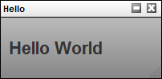

Important Note
Visit the Southpaw support site for more examples and tutorials on the API and its usage. The Support site is the place to go for wikis, forums, examples, and more.
Setup
The easiest way to interact with the server from the client using the Client API is to use the provided server stub code. This code includes a class and a utility that are very useful for handling many of the details around client/server interaction and authentication.
The server stub code is housed in a client folder and can be found in the TACTIC installation in the directory:
<tactic_install_dir>/src/client
The first step is to copy the entire client folder over to the client machine (the machine that will be running the scripts) to a directory that will be visible to the user. Most facilities would likely put this folder in a centralized location so that every computer would be able to execute its scripts. The path to this folder must be specified in the PYTHONPATH environment variable on client machines so that it can be found by the scripts. For instance, if PYTHONPATH = L:/custom_python. you would put the client folder in L:/custom_python. Please refer to the Python documentation for more information.
Settings
There are three important parameters for setting up the TacticServerStub to connect correctly :
There are a number of methods to set these parameters.
The first method is to set the following parameters directly in the server stub reference:
server = TacticServerStub() server.set_server(tactic_server) server.set_project(project) # this is not needed if you have run python get_ticket.py server.set_ticket(ticket)
These settings override all settings obtained elsewhere. This method ensures that these values are set up correctly based on some external information.
To set up a server stub, you can insert the stub information in your script (described in the client API documentation as part of the get_ticket() function). Or, you can run the script get_ticket.py, which is included with the client API example set (located in <TACTIC_INSTALL_DIR>/src/client/bin). When the stub is run, it creates a ticket file on the user’s machine which will be used each time any API script is run to authenticate which user is running the script.
The second method is through environment variables set up across the studio:
This method can be used by programs that set up user environments, and has other advantages. It is easy to switch the settings using a shell variable. The program that sets up the environment does not have to be written in Python. It can even be simple to set up by using a shell command line to set the environment variables.
The third method makes use of a resource file located in the user’s home directory. This resource file has a simple format:
login=joe server=localhost ticket=97d2bec3d73da71c14fb724a47af5053 project=bar
The login tag doesn’t actually do anything here, since the user name is encapsulated in the ticket itself.
The fourth method is described below:
If you have written a GUI or have some means of retrieving the user’s password on individual session instead, you can use the following construct to set the ticket. The server’s IP and project should be set beforehand.
server = TacticServerStub.get()
server_IP = '10.10.50.100'
my.set_server(server_IP)
my.set_project('sample3d')
ticket = my.get_ticket(login, password)
my.set_ticket(ticket)Once you have set up the environment for the client API to run correctly, you can try a sample script. The following simple script illustrates the structure of a TACTIC Client API program:
import sys
from tactic_client_lib import TacticServerStub
def main(args):
server = TacticServerStub()
server.start("Ping Test")
try:
print server.ping()
except:
server.abort()
raise
else:
server.finish()
if __name__ == '__main__':
executable = sys.argv[0]
args = sys.argv[1:]
main(args)This simple program will ping the server and return "OK". If everything is set up correctly, you should be able to run this program from a shell as follows:
# python ping.py OK
If you see "OK", then you have successfully connected to the TACTIC server using the client API.
If you need to run python get_ticket.py first, it can be found under: client/bin/get_ticket.py.
Directory Structure
The client API files are located in the directory <tactic_install_dir>/src/client. This directory contains all the files need for the client API. Typically you would copy all of the files in this directory to a location visible to the client machine.
There are a number of directories in this Client API directory:
The main directory "tactic_client_lib" is the base module that you will use to access all of the TACTIC client APIs. Typically, you would import this module when working with the client API:
from tactic_client_lib import TacticServerStub
There are a number of subdirectories under tactic_client_lib:
You should point to the Client API by having the directory src/client/tactic_client_lib stored somewhere accessible to client machines. Import the Tactic_Server_Stub with the following line in your script from tactic_client_lib:
import Tactic_Server_Stub
(For more details, visit the Southpaw Support site.)
tactic_server_stub.py
This module contains the TacticServerStub class, which encapsulates all interactions with the TACTIC server. This class lets you make full use of the TACTIC architecture in your custom applications. Although the TacticServerStub can be instantiated, it is often preferable to use it as a singleton so you can set up the server once and make use of it from various locations in your applications:
from tactic_client_lib import TacticServerStub server = TacticServerStub.get()
Once you have a reference to the TacticServerStub, you must set it up using three essential parameters: server, ticket, project. These parameters are described in more detail in the client API setup documentation.
Interpreter
This directory contains all the code needed to execute pipelines on the client. Pipelines in TACTIC are arbitrary process flow graphs. These pipelines have a number of advantages over other methods:
Application
This directory handles all of TACTIC’s interaction with third-party applications.
Note
This section is still in active development.
Note
If you haven’t done so, please review the Client API Setup doc.
Simple Ping
The following is a skeleton script interacting with the Client API:
Basic Operations
from tactic_client_lib import TacticServerStub
def main():
server = TacticServerStub()
server.start("Ping Test")
try:
print server.ping()
except:
server.abort()
raise
else:
server.finish()
if __name__ == '__main__':
main()Executing this script will give the following output:
$ python examples/ping.py OK
If you haven’t had a ticket in the user directory, please run python get_ticket.py. Otherwise, you will get an error like this:
File "G:\TSI\3.0_client\client\tactic_client_lib\tactic_server_stub.py",
line 2789, in _setup raise TacticApiException(msg)
tactic_client_lib.tactic_server_stub.TacticApiException:
[C:/sthpw/etc/<someuser>.tacticrc] does not exist yet. There is not enough
information to authenticate the server. Either set the appropriate environment
variables or run get_ticket.pyThe first line imports the TacticServerStub class. This class is a stub to the server and relays function calls between the TACTIC server and the client API code. It handles all the details of how to connect to the server. It also maintains status information, including the current project and whether or not the session is authenticated.
All client API scripts should run within a transaction. This requirement is achieved using server.start("Ping Test"), which initiates a new transaction on the server. All subsequent server interactions are grouped in the same transaction until server.finish() is executed. The function server.abort() is used to abort the transaction should any error occur in the body of the code.
Querying data
The most fundamental operation in the Client API is the query function, which enables access to direct information on an SObject
The following example illustrates the use of the query function:
# define the search type we are searching for
search_type = "prod/asset"
# define a filter
filters = []
filters.append( ("asset_library", "set") )
# do the query
assets = my.server.query(search_type, filters)
print "found [%d] assets" % len(assets)
# go through the asset and print the code
for asset in assets:
code = asset.get("code")
print(code)Executing this example will give the following output:
$ python examples/query.py found [3] assets chr001 chr002 chr003
In this example, a search_type is first defined. This search type is a uniquely named identifier for a class of SObjects.
A list of filters is next defined. These filters allow you to narrow the search to specific SObjects. In this example, only assets of the asset_library = "set" will be found.
Next, the assets are retrieved using the query() function, which returns a list where each element is a serialized dictionary of an SObject. In this example, the code for each asset is retrieved and printed.
Filters are very important in the query function because they narrow down searches to find the specific SObjects you are looking for. The filters are very flexible and support a wide range of different modes. A sample of the supported modes is shown below:
# simple search filter
filters = []
filters.append( ("name_first", "Joe") )
results = my.server.query(search_type, filters, columns)
# search with 'and': where name_first = 'Joe' and name_last = 'Smoe'
filters = []
filters.append( ("name_first", "Joe") )
filters.append( ("name_last", "Smoe") )
results = my.server.query(search_type, filters, columns)
# search with 'or': where code in ('joe','mary')
filters = []
filters.append( ("code", ("jo e", "mary")) )
results = my.server.query(search_type, filters, columns)
# search with 'or': where code in ('joe','mary') order by code
filters = []
filters.append( ("code", ("joe", "mary")) )
order_bys = ['name_first']
results = my.server.query(search_type, filters, columns, order_bys)
# search with like: where code like 'j%'
filters = []
filters.append( ("code", "like", "j%") )
results = my.server.query(search_type, filters, columns)
# search with regular expression: code ~ 'ma'
filters = []
filters.append( ("code", "~", "ma") )
results = my.server.query(search_type, filters, columns)
# search with regular expression: code !~ 'ma'
filters = []
filters.append( ("code", "!~", "ma") )Insert and Update
It is essential to insert SObjects and update their values.
The following code creates a new asset in the database.
# define a search type for which to add a new entry
search_type = 'prod/asset'
# build a data structure which is used as data for the new sobject
data = {
'code': 'chr001',
'name': 'Bob',
'description': 'The Bob Character'
}
server.insert(search_type, data)The following code snippet updates an existing asset in the database:
# define the search key we are searching for
search_type = "prod/asset"
code = 'vehicle001'
search_key = server.build_search_key(search_type, code)
# build a dataset of updated data
data = {
'description': 'This is a new description'
}
# do the update
asset = my.server.update(search_key, data)
print asset.get("description")Note that the search key is used to identify the precise sObject being updated. This search key uniquely identifies an sObject in TACTIC. With this search key, TACTIC is able to precisely update the specified sObject.
Javascript Client API
The TACTIC Client API can be accessed in Javascript as well as Python. One can deduce its usage from the Python Client API doc. One main point to notice is that the keyparams in the Client API doc, also known as keyword argumnets, should be expressed as a hash {} in javascript. Here are some examples:
\1. Using the eval() function, we want to find all the anim snapshots checked in with the asset chr001.
var server = TacticServerStub.get();
var exp = "@SOBJECT(sthpw/snapshot['context','anim'])";
var result = server.eval(exp,{search_keys:['prod/asset?project=sample3d&code=chr001']});
log.critical(result);\2. Display the notes written for the selected assets in the UI.
var server = TacticServerStub.get()
var search_keys = spt.table.get_selected_search_keys();
var exp = "@SOBJECT(sthpw/note)";
if (search_keys.length > 0){
var result = server.eval(exp, {search_keys: search_keys});
log.critical(result);
}\3. Display only the task code in anim or lgt process with description containing the word fire, not specific to any particular asset.
var server = TacticServerStub.get(); var exp = "@GET(sthpw/task['process', 'in', 'anim|lgt']['description','EQ','fire'].code)"; var result = server.eval(exp); log.critical(result);
\4. To insert a note for an asset chr001 under the model process and context.
var server = TacticServerStub.get();
var sk = server.build_search_key('prod/asset','chr001');
server.insert('sthpw/note', {'note': 'A test note', process: 'model', context: 'model', login: 'admin'},
{parent_key: sk});\5. To get the latest snapshot of the asset chr001 for the current project
var server = TacticServerStub.get();
var sk = server.build_search_key('prod/asset','chr001');
var snapshot = server.get_snapshot(sk, {context:'anim', include_paths_dict: true, versionless: false});
log.critical(snapshot);\6. To run a query of snapshots using filters and limit keyword argumnets
var server = TacticServerStub.get();
var filters = [];
// use built-in expression operator EQ, NEQ, EQI, or NEQI to specify the search_type has to contain prod/shot
filters.push(['search_type', 'EQ','prod/shot']);
filters.push(['project_code','sample3d']);
var snapshot = server.query_snapshots({filters: filters, limit: 5});
log.critical(snapshot);Checking files in
The Client API has access to the full range of TACTIC’s asset management system.
Any sObject can become a "container" for check-ins. This has the advantage that you can use this one SObject (container) to check in files using the deep set of check-in tools provided by TACTIC. The rest of this section describes the different types of check-ins available.
Simple Checkin
The simple_checkin() function allows you to check in a single file.
file_path = "./test/miso_ramen.jpg"
# now check in the file
search_type = "unittest/person"
code = "joe"
context = "test_checkin"
search_key = my.server.build_search_key(search_type, code)
# simple check-in of a file. No dependencies
desc = 'A Simple Checkin'
snapshot = my.server.simple_checkin(search_key, context, file_path, description=desc, mode="upload")
print snapshot.get('snapshot')The simple_checkin is the most basic type of check-in. It creates a snapshot and then checks a file into that snapshot. The newly created snapshot is returned.
<snapshot> <file name="miso_ramen_v001.jpg" type='main' code='123BAR'/> </snapshot>
The exact file name that is checked in will vary depending on the specific implemented naming conventions
Group (or Sequence) Checkin
The group_checkin() function allows you to check in a sequence of files, defined by a frame range:
<start>-<end>/<by>
For example, a frame range of 1 to 10 is descibed as "1-10". Or every second frame from frame 20 to frame 50 can be described as "20-50/2".
TACTIC provides two notations to describe the file names of a range of frames. This special notation, in conjunction with the frame range, can generate a sequence of files. The two notations are as follows:
Here is a code example of checking in a sequence of files:
pattern = "./test/miso_ramen.%0.4d.tif"
file_range = '1-24'
context = 'beauty '
# build the search key
search_type = "unittest/person"
code = "joe"
search_key = my.server.build_search_key(search_type, code)
# simple checkin of a file
desc = 'A Checkin of a group of files'
context = "test_checkin"
snapshot = server.group_checkin(search_key, context, file_pattern, file_range)
print snapshot.get('snapshot')When executed, this example will check in a sequence of 24 files starting from 1 to 24. It should be noted that this method will by default expect that the files have been uploaded to the server. For this reason, it is often recommended to use preallocated check-ins for both sequence and directory check-ins.
Directory Checkin
As the name suggests, a directory check-in enables an entire directory and all of its subdirectories to be checked in. TACTIC does not keep track of the contents of the checked-in directory. This allows you to check in complex directory structures without having to inform TACTIC of all of the details of the contents. This might be the best approach when all the details of the directory are already handled by some other system so it is not necessary for TACTIC to track things.
Here is a code example of checking in a directory:
file_path = "./test/XG002/beauty"
# build the search key
search_type = "unittest/person"
code = "joe"
search_key = my.server.build_search_key(search_type, code)
context = "test_checkin"
# simple check-in of a file.
desc = 'A Simple Checkin'
snapshot = my.server.directory_checkin(search_key, context, file_path, description=desc)
print snapshot.get('snapshot')Note that this code is very similar to single file check-ins ( simple_checkin() ), because TACTIC treats a directory check-in in a similar manner to a file check-in. It uses the leaf directory as the file name. It is important to consider naming conventions, because this leaf directory will be handled using file naming conventions even though it is a directory.
As with group_checkin(), this method already expects the files to have been uploaded to the server in the appropriate place. There are various modes that can be used to alter the manner in which the files get to the server repository. For details, see the "modes" section below.
Piecewise check-ins
TACTIC allows you to build up a check-in piecewise or stages. This is a powerful feature because you can build a check-in over the course of many operations (and many transactions if desired) and the whole set of operations will be treated as a single versioned entity. The TACTIC snapshot definition allows for the entry of multiple files into a single check-in. Typically, the process begins by creating a new "empty" snapshot. This snapshot is a placeholder which reserves a version and context for a particular set of future operations. Once this empty snapshot is created, you can start adding files and dependencies to it.
The following example checks in a Maya file and a corresponding OBJ file.
maya_path = "./test/chr001/chr001_model.ma"
obj_path = "./test/chr001/chr001_mode.obj"
# build the search key
search_type = "unittest/person"
code = "joe"
context = "test_checkin"
search_key = my.server.build_search_key(search_type, code)
# create an empty snapshot
desc = 'A Piecewise Checkin'
snapshot = my.server.create_snapshot(search_key, context, description=desc)
print "empty"
print snapshot.get('snapshot')
snapshot_code = snapshot.get('code')
snapshot = my.server.add_file(snapshot_code, maya_path, file_type='maya')
snapshot = my.server.add_file(snapshot_code, obj_path, file_type='obj')
print
print "two files"
print snapshot.get('snapshot')Executing this code will result in the following:
empty <snapshot/> two files <snapshot> <file name='chr001_model_v001.ma' file_code='1044BAR' type='maya'/> <file name='chr001_model_v001.obj' file_code='1045BAR' type='obj'/> </snapshot>
First, an empty snapshot is created using create_snapshot(), then files are added to this snapshot one by one. Note that the type here is explicitly specified. This type differentiates one file in a snapshot from another.
It is also possible to add a sequence of files or even a directory to a snapshot:
pattern = "./test/miso_ramen.%0.4d.tif"
file_range = '1-24'
snapshot = server.add_group(snapshot_code, file_pattern, file_range, file_type='sequence')
print snapshot.get('snapshot')
directory = "./test/test_directory"
snapshot = server.add_directory(snapshot_code, directory, file_type='directory')
print snapshot.get('code')Executing the last code snippet will give the following results:
<snapshot> <file name="mise_ramen.%0.4d.tif" file_code='1047BAR' type='sequence'/> </snapshot> <snapshot> <file name="mise_ramen.%0.4d.tif" file_code='1047BAR' type='sequence'/> <file name="test_directory" file_code='1047BAR' type='directory'/> </snapshot>
Checkin Modes
There are various modes that you can use to check in files. These modes determine how a file will be transferred to the repository.
The previous simple_checkin() example uses the "upload" mode. This means that the client will connect to the server and use an HTTP connection to upload the file to the server where it will be subsequently checked in. HTTP does not require any additional setup and it may be the only choice available for facilities having only WAN access to the TACTIC server. However, HTTP is a very slow transport protocol so, if possible, it is better and faster to use other available modes.
The copy and move modes use a "handoff" directory, which is an intermediate directory that is visible on the network to both the client machine and the TACTIC server. When the check-in is executed, the files are first copied or moved to this handoff directory. The TACTIC server is then notified and grabs the files and puts them into the repository, renaming as the naming conventions stipulate. The files are always "moved" from the handoff directory to the repository. The advantage of using these modes over the "upload" mode is that they go through NFS or CIFS. These modes make use of the fast networks and huge file servers that are available in typical media and production facilities.
The copy and modes require a bit of setup because the server and the client must be able to see the handoff directory. You need to configure the TACTIC server configuration file, located in <site_dir>/config/tactic_<os>-conf.xml. This file contains the following relevant settings:
Note that the win32 settings apply to all flavors of Windows, including Windows 64-bit machines. The Linux settings apply to all POSIX machines including Debian base operating systems and Mac OS X.
After you set the configuration, you can then use the copy or move modes to take advantage of the handoff directory:
# simple check-in of a file using move mode
desc = 'A Simple Checkin'
snapshot = my.server.simple_checkin(search_key, context, file_path, description=desc, mode="move")
print snapshot.get('snapshot')Note that the only difference in this example from earlier check-in examples is that the mode parameter is set to "move".
Preallocated check-in (mode="preallocate")
Preallocated check-ins are the most efficient check-ins. Bandwidth and storage space are expensive commodities in a typical media or production facility, so there is a definite cost and time benefit to reducing their use as much as possible.
Preallocated check-ins enable a client process to be checked directly into the repository. They are recommended for check-ins that are very heavy in either bandwidth or disk usage and are designed to minimize both. Some production processes that would benefit from using this check-in mode include rendering frames, ingesting plates, simulating data, and so on.
The following steps describe the process for preallocating check-ins:
The path supplied by TACTIC in the preallocation is located directly in the repository. The process generating the files can thus save the files directly to the correct location in the repository (following all the predefined naming conventions). Files are created directly in the repository with the correct directory and file name as TACTIC would have checked them in using the other methods. This eliminates later having to copy or move files around the network unnecessarily, as is typically required by other check-in modes.
Because the simple_checkin(), group_checkin() and directory_checkin() functions perform the entire check-in process in one step, you cannot use them for preallocated check-ins. Instead, you would use a piecewise check-in to build up the checked in parts. The following is an example of a preallocated check-in using a piecewise approach:
search_type = "prod/render"
code = "XG002_beauty"
search_key = my.server.build_search_key(search_type, code)
# create an empty snapshot
desc = 'A Preallocated Checkin'
context = "render"
snapshot = my.server.create_snapshot(search_key, context, description=desc)
# get the preallocated path
snapshot_code = snapshot.get('code')
file_pattern = snapshot.get_preallocated_path(snapshot_code, file_type="main")
print "file_pattern: ", file_path
# generate the files
for i in range(1, 20):
file_path = file_pattern % i
render_file(file_path)
# add the files to the snapshot
snapshot = server.add_group(snapshot_code, file_type="main", file_range="1-20", mode="preallocate")
print snapshot.get("snapshot")Executing the above code would result in output something like:
file_pattern: XG002_beauty_v012.%0.4d.tif <snapshot> <file name="XG002_beauty_v012.%0.4d.tif" file_code="123BAR" type="main"/> </snapshot>
The file pattern returned is completely dependent on naming conventions. In this case, the search_type would have had to define a naming convention whereby the context of "render" produces the above file pattern. For example, the file naming convention code could include:
def prod_render(my):
render = my.sobject
ext = my.get_file_ext()
parts = []
parts.append( render.get_value('code') )
parts.append( "v%0.3d" % my.snapshot.get_value("version") )
file_name = "_".join(parts) + ".%0.4d" + ext
return file_name(See the naming convention documentation for more information on how to set up naming conventions.)
It should be noted that the function get_preallocated_path() returns a full path, including the filename as specified by the naming conventions. Ideally, TACTIC must be able to generate the correct path that can be used to save the files (as in the example above).
There is enormous advantage to using preallocated check-ins. Files are created directly to the repository, eliminating all of the unnecessary copying of files around the servers. When groups of files reach the muti-gigabyte or even terabyte range, it becomes prohibitively expensive to check in files in the traditional manner. Preallocated check-ins maximize the use of your internal system architecture.
In-Place Checkins
In general, the in-place check-in should be considered as the last resort. In-place check-ins do not make use of the TACTIC naming conventions, and may be the only option when you are confronted by a legacy directory structure. Using this check-in method makes the assumption that you will be able to later define logic that will map to a desired naming convention. As a guideline, naming conventions should be procedural and as simple as possible, so you must plan carefully before considering in-place check-ins.
Types of dependencies
Snapshots control versioning in TACTIC. When processing a checkin, TACTIC creates a snapshot that contains an XML description of what was checked in. Snapshots can also be dependent on any number of other snapshots (through a "ref" tag). Taking advantage of this dependency relationship, you can create complex dependency trees for complex scenes, with the option of undoing them if required.
There are two types of dependencies:
Connecting snapshots
Dependencies are connected using the add_dependency_by_code() method, which takes an existing snapshot and adds the appropriate reference tag to it.
The following example shows how to connect two snapshots:
search_type = "prod/asset"
code = "chr001"
search_key = server.build_search_key(search_type, code)
# checkin a model
model_snapshot = server.simple_checkin(search_key, model_path, context="model")
model_snapshot_code = model_snapshot.get('code')
# checkin a rig
rig_snapshot = server.simple_checkin(search_key, rig_path, context="rig")
rig_snapshot_code = rig_snapshot.get('code')
# add the model dependency to the rig
snapshot = server.add_dependency_by_code(rig_snapshot_code, model_snapshot_code)
print snapshot.get('snapshot')Executing the above example would output:
<snapshot> <file name="chr001_rig_v001.ma" file_code="123BAR" type='main'/> <ref context='model' version='3' search_type='prod/asset?project=sample3d' search_id='4'/> </snapshot>
The ref tag is the reference to another checkin. In this case, the reference can be interpreted as being contained in the snapshot (that is, this is a hierarchical dependency).
Sometimes, it is not possible to store or retrieve version information for an SObject within a session if a particular application provides only the filename. It is generally assumed that a filename is unique for each search_type in each project (this is not strictly enforced, but should be as best practice), so it is possible to reverse-map a filename to a snapshot. In this case, you can try to add a dependency using the add_dependency() method:
file_path = extract_dependent_path() snapshot = server.add_dependency(snapshot_code, file_path)
This method will attempt to link the filename with the appropriate snapshot.
Input references
As opposed to the previous example of hierarchical references, there is a second type of dependency called an input reference. Input references are dependencies where a particular snapshot was used to produce another snapshot, but the resulting snapshot does not contain the contents of the originating snapshot. As an example, a Photoshop file may be used to generate a texture map, but the texture map does not need to contain the Photoshop file.
Adding an input reference is simply a matter of setting the "type" argument to "input_ref":
source_path = "./test/texture.psd"
image_path = "./test/texture.tif"
# check in the photoshop file
source_snapshot = server.simple_checkin( search_key, context="source", file_path=source_path )
source_snapshot_code = source_snapshot.get('code')
source_repo_path = server.get_path_from_snapshot( source_snapshot_code )
# checkin the image
image_snapshot = server.simple_checkin( search_key, context="image", file_path=image_path )
# add an input dependency
image_snapshot_code = image_snapshot.get('code')
image_snapshot = server.add_dependency( image_snapshot_code, source_repo_path, type="input_ref")
print snapshot.get('snapshot')The above code would produce output like the following:
<snapshot> <file name="texture_image_v001.tif" file_code="123BAR" type='main'/> <ref context='source' version='3' search_type='prod/asset?project=sample3d' search_id='4' type="input_ref"/> </snapshot>
By managing dependencies at the time of each checkin, it is possible to build up a dependency tree. Thus each version of every checkin has its own independent dependency tree.
Although any execution environment can interact with TACTIC by interfacing through the Client API, most often, users will be interacting with TACTIC through the browser. TACTIC’s main interface is the browser. All browsers come with the Javascript language interpreter built-in and thus any rich interface that integrates with TACTIC will need to interact with the various components using Javascript.
Three core frameworks in TACTIC work together to create a rich web interface.
The TACTIC Client API can access server functionality through the TacticServerStub in the same manner as its Python equivalent. Note the similarities in code structure in the following example:
Python code:
server = TacticServerStub.get()
snapshot = server.checkin(search_key, context, path, mode="upload")
print snapshot.get("code")Javascript code:
var server = TacticServerStub.get();
var snapshot = server.checkin(search_key, context, path, {mode: "upload"} );
alert(snapshot.code)There are a few differences due to the syntax of the two different languages. Keyword arguments are not natively supported by Javascript. Since some of the functions in the server stub have numerous arguments, it is desirable to only use those that are needed without having to "fill in" all of the preceding arguments with nulls.
For example, the previous Javascript code would have to read like the above:
server.checkin(search_key, context, path, null, null, null, null, "upload")
In general, a given function will have a few necessary arguments and all "optional" arguments are given in a kwargs dictionary. Another difference is that the sobjects returned are Javascript "objects" whose members are values from the database. Attributes can be accessed in two ways:
The most convenient method to test and implement the Javascript examples is in the TACTIC Script Editor. This can be convenient accesses by pressing the "9" hot key to bring it up. Alternatively, the TACTIC Script Editor can be brought up under the gear menu under: Tools → TACTIC Script Editor.
This is a simple "Hello World" example.
<html> <h1>Hello World</h1> </html>
The XML document embeds an HTML tag that will be used to layout elements in the application.
The simplest way to view this is to open up the TACTIC Script Editor and input the following code:
var html = "<html><h1>Hello World</h1></html.>";
var kwargs = {
'html': html
};
spt.panel.load_popup('Hello', 'tactic.ui.panel.CustomLayoutWdg', kwargs);
// NOTE: this should be:
// spt.api.load_popup('Hello', 'tactic.ui.panel.CustomLayoutWdg', kwargs);This previous code is completely in Javascript, however, layout pages using strings in Javascript rapidly becomes unwieldy. It is thus preferential to create these layouts using the widget config. This is done by going to the side bar and going to Project Admin → Widget Config. This will open up the "widget_config" table. This table is used to store all custom interface configurations for widgets.
Create a new entry by pressing the [+] button on the right side. Input the following into the config*field and for *view input example01.<config> <example01> <html> <h1>Hello World</h1> </html> </example01> </config>
This is the full XML document describing the widget config. Note that the HTML is now embedded within that XML document. This will be important to know later when behaviors and elements are added to the widget.
Finally, in the TACTIC Script Editor, enter the following:
kwargs = {
view: 'example01'
};
spt.panel.load_popup('Example01', 'tactic.ui.panel.CustomLayoutWdg', kwargs);The following will appear when you click on "Run" in the TACTIC Script Editor the script above:

Add a new entry to the widget_config table with view = example02 and with the following config definition.<config> <example02> <html> <span>This is a button:</span> <input type=button class=button1 value=Press Me/> </html> <behavior class=button1>{ "type": "click_up", "cbjs_action": ' alert(Hello World); ' }</behavior> </example02> </config>
In this example, an HTML button is added to the HTML layout. By default, a button doesn’t do anything when it is clicked. A behavior has to be added for something to happen. TACTIC behaviors are added to DOM elements by their class attributes.
When the button is clicked (corresponding to the "click_up" event type), the Javascript in the "cbjs_action" attribute is executed. This example will alert a "Hello World" message on clicking.
The following example will add a text area to the interface as well as extract information from that text area once the button has been clicked.
<?xml version='1.0' encoding='UTF-8'?>
<!-- This examples displays some html UI and then reacts to it using the TACTIC
behavior system -->
<config>
<example03>
<html>
<div class='spt_top'>
<textarea name='description' class='spt_input'></textarea>
<input type='button' class='spt_button1' value='Press Me'/>
</div>
</html>
<behavior class='spt_button1'>{
"type": "click_up",
"cbjs_action": '''
var top = bvr.src_el.getParent('.spt_top');
var values = spt.api.Utility.get_input_values(top);
var description = values.description;
alert('You entered: ' + description);
'''
}</behavior>
</example03>
</config>Note that currently, get_input_values() requires that every input element have class=spt_input attribute. Future versions may remove this requirement, but currently this is necessary.
Please note that when an API for 2.6/2.7, the following lines will be changed:
The following line:
var values = spt.api.Utility.get_input_values(top);
will be replace by:
var values = spt.api.get_input_values(top);
The following line:
var top = bvr.src_el.getParent('.spt_top');
will be replaced by:
var top = spt.api.get_parent(bvr.src_el, ".spt_top");The behavior definition warrants a closer examination:
<behavior class='spt_button1'>{
"type": "click_up",
"cbjs_action": '''
var top = bvr.src_el.getParent('.spt_top');
var values = spt.api.Utility.get_input_values(top);
var description = values.description;
alert('You entered: ' + description);
'''
}</behavior>First, there is an implied bvr object that exists in the namespace of the behavior. This bvr objects contains useful data for the purposes of executing behaviors. The most important attribute is "bvr.src_el". This element is the source element that called the event. This element can be used as a starting point to navigate the DOM to search for elements.var top = bvr.src_el.getParent(.spt_top);
It is common practice to find a top level element of a widget from the source element. This top element is a starting point from which searches under a DOM hierarchy can be made. By starting from a top element, it is ensured that the returned values are isolated to that single widget.
The next line gets all of the values of all of the input elements under the top element.var values = spt.api.Utility.get_input_values(top);
This returns a dictionary of name/value pairs of all of the input elements underneath the top element.
By adding expressions to a report, it becomes very easy to create reports that extract important information and combine it into a single view.
<?xml version=1.0 encoding=UTF-8?> <config> <example04> <html> <h1>My login is [expr]$LOGIN[expr]</h1> <table> <tr><td>Number of tasks</td><td>[expr]@COUNT(sthpw/task)[/expr]</td></tr> <tr><td>Number of checkins</td><td>[expr]@COUNT(sthpw/snapshot)[/expr]</td></tr> <tr><td>Number of model checkins</td> <td>[expr]@COUNT(sthpw/snapshot[context,model])[/expr]</td> </tr> </table> </html> </example04> </config>
Expression can be added into the html code by inserting it between [expr][/expr] tags. The expression will be evaluated and the result will be replaced into the html. This provides an ability to layout an arbitrary layout in javascript and then fill in the missing data with expressions. The full power of the TACTIC expression language is available. Please refer to the expression language reference for more information on the expression language.
The CustomLayoutWdg can make use of the Mako templating engine to create dynamic content. Mako is a powerful templating system similar in concept to PHP, but instead uses the Python programming language. The expression language on its own is quite powerful, but it is still and expression lanaguage and sometimes, it is necessary to have full programming logic. Mako provides a path to create content that is too complex for the expression alnaguage to handle alone.
The following example shows a report generated with the help of Mako:<?xml version=1.0 encoding=UTF-8?> <!-- Simple test using mako templating -→ <config> <example06 include_mako=true> <html> <div> <![CDATA[ <% # get some data total = 0 for ctx in [model, texture, rig]: num_snapshots = server.eval("@COUNT(sthpw/snapshot[context,%s])" % ctx) context.write("Number of %s checkins: %s<br/>" % (ctx, num_snapshots) ) total += num_snapshots %> Total number of tasks: ${total}<br/> ]]> </div> </html> </example06> </config>
Mako is not enabled by default. This must done with with the "include_make" attribute:<example06 include_mako=true>
All code between <% and %> tags are parsed as python code and executed on the server. In order to write out to the html, Mako uses the context.write() method. This is important to note because the "context" is a reserved word in Mako. This can cause a confusing error because context is a common variable name when programming in TACTIC.
context.write("Number of %s checkins: %s<br/>" % (ctx, num_snapshots) )The python code with the python block can still make use of the entire TACTIC Client API through the use of a builtin variable "server". This also means that expressions can be acccesed here as well:num_snapshots = server.eval("@COUNT(sthpw/snapshot[context,%s])" % ctx)
Also note that the entire Mako code is wrapped around an XML CDATA block ( <![CDATA[ … ]]> ). This is because python code very easily breaks XML integrity rules. The CDATA block allows for any special characters to be entered in the XML document. It is good practice to add the CDATA tags in order to avoid errors later on.
Any variables that are declared in python blocks can be accessed outside of the python blocks using the ${var} syntax. The following will replace ${total} with the corresponding variable defined in the python block.
Total number of tasks: ${total}<br/>Combining the expression language with Mako Templating provides unlimited flexibility in creating complex reports.
The CustomLayoutWdg can be used inside of a table element. This makes it easy to create arbiraritly complex table elements within a standard TACTIC table layout widget. The following displays the number of tasks for the row sobject.<config> <my_view> <element name=num_tasks> <display class=tactic.ui.panel.CustomLayoutWdg> <html> <div class=top> <b>[expr]@COUNT(sthpw/task)[/expr] tasks</b> </div> </html> <behavior>{ type: load, cbjs_action: ' var search_key = bvr.kwargs.search_key; alert(search_key) ' }</behavior> </display> </element> </my_view> </config>
This element behaves just like the previous CustomLayoutWdg, however there are a few additions. There is a starting sobject that corresponds to the table row that is passed in and is used as the starting sobject for all expressions. The following expression finds the number of tasks for the sobject in question and not all of the tasks in the system.<b>[expr]@COUNT(sthpw/task)[/expr] tasks</b>
Another addition is that callbacks have the search key of the sobject for the row available through the bvr object passed into the behvaior callback.var search_key = bvr.kwargs.search_key;
With the search key, it becomes possible to use the client API to change data or checkin files for that specific sobject.
It is often necessary to be able to interact with the server using Javascript in a behavior callback. This is done using the Javascript implementation of the TACTIC Client API
The following example illustrates how to interact with the server using the TacticServerStub object. This object is used to issue commands that will be run on the server such as updating data in the database or checking in files.
First, add any image in "C:/Temp/test.jpg"
<?xml version=1.0 encoding=UTF-8?> <config> <example04> <html> <div class=spt_top> <textarea name=description class=spt_input></textarea> <input type=button class=spt_button1 value=Press Me/> </div> </html> <behavior class=spt_button1>{ "type": "click_up", "cbjs_action": ' var top = bvr.src_el.getParent(.spt_top); var values = spt.api.Utility.get_input_values(top); var description = values.description; var applet = spt.Applet.get(); var paths = applet.open_file_browser("C:/Temp"); var path = paths[0]; var search_key = bvr.kwargs.search_key(); var server = TacticServerStub.get(); server.checkin(search_key, "icon", path, {description: description}); ' }</behavior> </example04> </config>
The applet is used to interact with the client machine. It defines a number of useful methods such as listing directories, moving and copying files, uploading and downloading files. For a complete list of the functionality present in the applet, please refer to the Applet Reference manual. In this case, the example is using the applet to open up a file browser so the user can select a file.
var applet = spt.Applet.get();
var paths = applet.open_file_browser("C:/Temp");
var path = paths[0];The search key can be obtained from the behavior. This will be required to check into the correct sobject.var search_key = bvr.kwargs.search_key();
Once a file path has been selected, the server stub is used to check in the file to the server.var server = TacticServerStub.get(); server.checkin(search_key, "icon", path, {description: description});
Generally, it is not desirable to show a full interface for the checking directly in the table cell. It is much cleaner to have a simple publish button that will open up the interface in a pop-up.
Many widgets are defined on the server side. These can be integrated in a custom interface by using the TACTIC specific <element> tag in the html definition of a CustomLayoutWdg.<config> <example11> <html> <h1>This is a list of users</h1> <element name=users/> </html> <element name=users> <display class=tactic.ui.panel.TableLayoutWdg> <search_type>sthpw/login</search_type> <view>table</view> </display> </element> </example11> </config>
The TACTIC Client API interacts with teh server through an XMLRPC connection. This has a number of advantages and disadvantages that the developer should be aware of when programming the Client API. XMLRPC is a standard web sevice protocol built on top of HTTP. This means that the protocol is stateless. It also means that it requires an HTTP request for every interaction.
HTTP requests are very slow when compared to running code directly on the server, so care must be taken to minimize the number of interactions that occur between the client code and the server code. However, if a client side application is written with a few basic best practice guidelines, performance issues should not be a problem.
The TACTIC server should be treated as a special resource. The more client side processing you do, the lower the load on the server and the more scalable your client side application.
If possible, it is always preferable to pool queries into a single request with the use of proper filters: Unfortunately, this sometime sacrifices pure Object Oriented elegance, but it is a tradeoff that is well worth it in practice. For example, an object oriented approach to aquiring data would be:
shots = server.query("prod/shot", filters=[['sequence_code': 'XG']])
for shot in shots:
tasks = server.get_all_children( shot.get('__search_key__'), 'sthpw/task')When using this approach, a call to the server will be made for every shot. While, in principle, this will work, it could potentially be quire slow. A faster way to do this would be to get all of the tasks for all of the shots in a single statement:
shots = server.query("prod/shot", filters=[['sequence_code': 'XG']])
shot_keys = [ shot.get('__search_key__') for shot in shots)
tasks = server.get_all_children( shot_keys, 'sthpw/task')This will get all of the tasks for all of the shots in one call to the server. Of course, some extra processing is required to relate the retrived tasks to the shot, however, this is all done on the client side and is executed very quickly.
tasks_dict = {}
for task in tasks:
parent_key = task.get('__parent_key__')
task_list = tasks_dict.get(parent_key)
if not task_list:
task_list = []
task_dict['parent_key') = task_list
tasks_list.append(task)Creating this dictionary will enable rapid look up of the tasks for each shot.
Of course, this is done for you by providing the "return_mode" flag.
tasks = server.get_all_children( shot_keys, 'sthpw/task', return_mode='dict' )
By default, the return mode is "list", which just returns a flat list allow you to restructure as desired.
This applies to the more general "query" method:
tasks = server.query("sthpw/task")Hierarchies
Each project in TACTIC contains a collection of search types. The schema defines how these search types are related to each other. There is a wide variety of possible ways that two search types can be related to each other. The schema abstracts these relationships so that it is easy to navigate through these hierarchies.
The following relationship types are used:
Of the above types, sobject_code and search_type are used most often. Any of these types can be used at any time and be related to each other. Having an intimate knowledge of these relationships can be confusing, so to keep things organized a project schema is used to define which search_types can be related to other search_types and in which ways. In other words, TACTIC uses the schema definition for the project to abstract relationships and make them easier to understand.
Methods
get_parent()
There are a number of methods to help navigate through the search type hierarchy.
Every search type can have a single parent type. You can query this type with get_parent_type(). For example, to find the parent type of a "prod/asset":
search_type = "prod/asset" parent_type = server.get_parent_type(search_type) print parent_type
When executed, the above code snippet would return the string "prod/asset_library".
get_child_types()
When the parent/child relationship is search_type or search_key, each SObject will have its own parent. In this case, the parent would return "*", which indicates that all search types are a possible parent.
To find child types, use the get_child_types() function. This function returns a list because a search_type can and will have a number of search types as children. This method will return all of the possible search types.
get_parent()
Most search_types will only have one parent type (except those that defer the parentage to the SObject itself). The get_parent() method allows you to obtain the individual parent SObject of an SObject.
search_type = "prod/asset"
code = "vehicle011"
search_key = server.build_search_key(search_type, code)
parent = server.get_parent(search_key)
print parent.get('code')Executing the above code snippet would result in the output:
vehicles
because the parent type of "prod/asset" is "prod/asset_library" and the parent of "vehicle011" is the asset library "vehicles"
get_all_children()
Search types can and will have a number of child types. Some types defer the parentage to the SObject itself to determine the parent type. So when searching for children of parents, it is necessary to pass in a child type to narrow down the search. The options for child types can be found by the method get_child_types().
search_type = "prod/asset_library"
code = "vehicles"
search_key = server.build_search_key(search_type, code)
child_type = "prod/asset"
children = server.get_all_children(search_key, child_type)
for child in children:
print child.get('code')This code snippet will print out all of the codes of the children of this particular asset library, namely all of the assets in the asset library "vehicles."
get_all_children() can also be used to get snapshots (sthpw/snapshot) or tasks (sthpw/task) as well. These are special child types that defer the parent type to the individual SObjects.
search_type = 'prod/asset' code = 'vehicle011' search_key = seaver.build_search_key(search_type, code) child_type = 'sthpw/task' tasks = server.get_all_children(search_key, child_type)
This code snippet will obtain all of the tasks associated with vehicle011.